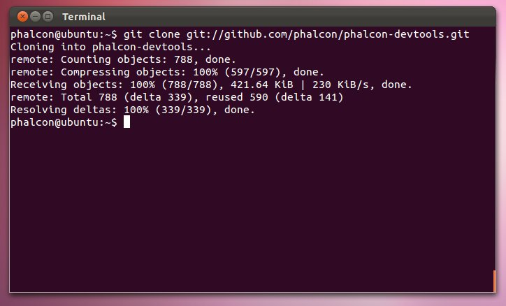
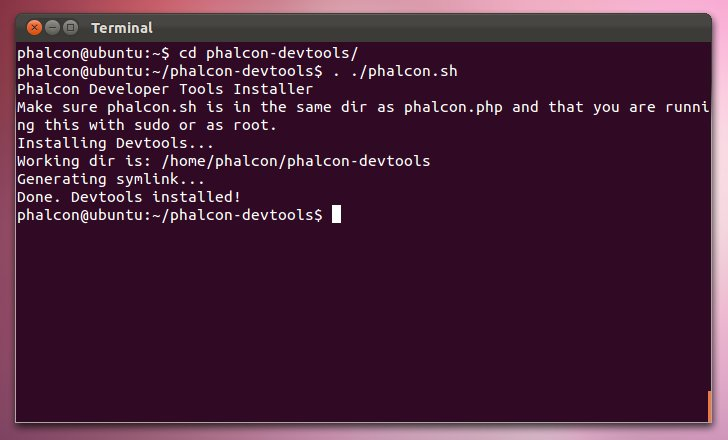

Phalcon Developer Tools on LinuxThese steps will guide you through the process of installing Phalcon Developer Tools for Linux. Prerequisites¶The Phalcon PHP extension is required to run Phalcon Tools. If you haven’t installed it yet, please see the Installation section for instructions. Download¶You can download a cross platform package containing the developer tools from the Download section. Also you can clone it from Github. Open a terminal and type the commands below:

Then enter the folder where the tools were cloned and execute ”. ./phalcon.sh”, (don’t forget the dot at beginning of the command):

Create a symbolink link to the phalcon.php script:
ln -s ~/phalcon-devtools/phalcon.php /usr/bin/phalcon chmod ugo+x /usr/bin/phalcon Congratulations you now have Phalcon tools installed! |